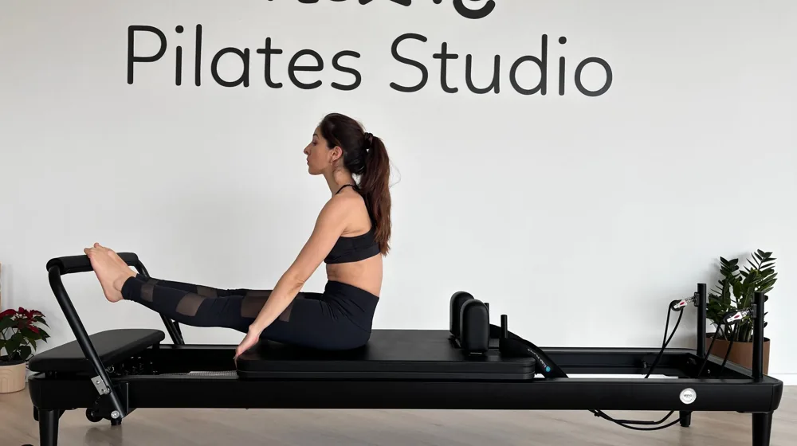

필라테스 효과부터 부작용까지, 현명하게 시작하는 5가지 체크포인트
사진: Flexity Yoga & Pilates / Pexels (무료 이미지, 출처 표기)
필라테스, 어떤 효과를 기대할 수 있을까?

필라테스는 신체 이완과 강화 운동을 통해 몸의 불균형을 해소하고 자세를 개선하는 데 중점을 둡니다. 대표적인 효과로는 코어(core, 몸의 중심부를 지지하는 근육군) 강화가 꼽힙니다. 복부, 허리, 엉덩이 근육을 단련하여 척추를 안정시키고 올바른 자세를 유지하는 데 도움을 줍니다.
또한 유연성과 균형 감각 향상에도 기여합니다. 다양한 스트레칭 동작과 정교한 움직임을 통해 관절의 가동 범위를 늘리고, 몸의 좌우 균형을 맞춰 움직임의 효율성을 높일 수 있습니다. 이러한 효과는 특히 장시간 앉아서 일하는 직장인이나 자세 교정이 필요한 사람들에게 긍정적인 변화를 가져올 수 있습니다.
정신적인 측면에서도 효과를 기대할 수 있습니다. 필라테스는 동작 수행 중 호흡과 집중력을 중요하게 여겨, 스트레스 완화와 정신 집중력 향상에 도움을 줍니다. 부드럽지만 꾸준한 움직임은 긴장을 이완하고 심리적인 안정감을 가져다줄 수 있습니다.
필라테스 시작 전 알아야 할 부작용과 주의점
필라테스는 안전한 운동으로 알려져 있지만, 잘못된 방법으로 수련할 경우 부작용이 발생할 수 있습니다. 가장 흔한 부작용은 잘못된 자세로 인한 부상입니다. 특히 목, 허리, 어깨 등 특정 부위에 통증을 느끼거나 기존 통증이 악화될 수 있습니다.
무리한 동작은 근육 염좌나 관절 부담으로 이어질 수 있으며, 특히 척추 질환이나 디스크 등 기저 질환이 있는 경우 전문가와 상의 없이 무리하게 운동하면 상태를 악화시킬 수 있습니다. 운동 전 자신의 신체 상태를 정확히 파악하고, 숙련된 강사의 지도를 받는 것이 중요합니다.
또한, 필라테스는 즉각적인 체중 감량보다는 근력 강화와 자세 교정에 초점을 맞춥니다. 단기간에 큰 체중 감량을 기대하고 시작한다면 실망할 수 있으며, 운동 효과를 제대로 보지 못했다고 느낄 수도 있습니다. 운동 목표를 명확히 설정하고 꾸준함을 유지하는 것이 중요합니다.
나에게 맞는 필라테스, 기구 vs 매트 비교
필라테스는 크게 매트를 활용하는 매트 필라테스와 다양한 기구를 활용하는 기구 필라테스로 나뉩니다. 각 방식은 장단점이 뚜렷하여 자신의 목표와 환경에 맞춰 선택하는 것이 좋습니다.
2026년 10월 기준으로 매트 필라테스는 온라인 강의나 홈트레이닝으로 쉽게 접할 수 있으며, 기구 필라테스는 전문 스튜디오에서 그룹 또는 개인 레슨으로 주로 진행됩니다. 개인의 운동 경험, 건강 상태, 예산 등을 고려하여 최적의 선택을 하시길 권장합니다.
안전하고 효과적인 필라테스를 위한 팁
필라테스를 안전하고 효과적으로 수련하기 위해서는 몇 가지 중요한 팁을 기억해야 합니다. 첫째, 자격을 갖춘 강사를 선택하는 것입니다. 강사의 전문성과 경험은 부상을 예방하고 올바른 자세를 익히는 데 결정적인 역할을 합니다. 공인된 자격증 여부와 경험을 확인하는 것이 좋습니다.
둘째, 초기에는 기본에 충실해야 합니다. 복잡한 동작보다는 기초적인 호흡법과 자세를 충분히 익히는 것이 중요합니다. 특히 처음 필라테스를 접한다면 개인 레슨이나 소규모 그룹 레슨을 통해 집중적인 지도를 받는 것이 효과적입니다.
셋째, 자신의 몸의 소리에 귀 기울여야 합니다. 통증을 참아가며 무리하게 운동하는 것은 부상으로 이어질 수 있습니다. 불편함이나 통증이 느껴진다면 강사에게 즉시 알리고, 동작을 조절하거나 잠시 쉬는 것이 바람직합니다. 모든 운동은 안전이 최우선입니다.
필라테스, 이런 분에게 특히 추천해요!
필라테스는 특정 대상에게 더욱 큰 효과를 줄 수 있습니다. 다음과 같은 고민을 가지고 있다면 필라테스 시작을 고려해볼 만합니다.
- 자세 교정을 원하는 분: 장시간 앉아있거나 서서 일하며 자세가 나빠진 경우, 굽은 등, 거북목 등의 교정에 도움을 받을 수 있습니다.
- 허리 통증 완화를 목표로 하는 분: 약해진 코어 근육은 허리 통증의 원인이 되곤 합니다. 필라테스를 통해 코어 근육을 강화하면 허리 통증 완화에 기여할 수 있습니다. (단, 의료 목적의 재활은 전문의와 상담 필수)
- 유연성과 균형 감각을 높이고 싶은 분: 평소 몸이 뻣뻣하거나 운동 중 균형 잡기가 어렵다면 필라테스를 통해 유연성과 균형 능력을 향상시킬 수 있습니다.
- 산전·산후 관리가 필요한 여성: 임신과 출산으로 인해 약해진 골반 기저근(pelvic floor muscle)과 복부 근육을 강화하고 회복하는 데 필라테스가 효과적입니다.
- 운동 강도를 조절하며 꾸준히 운동하고 싶은 분: 필라테스는 개인의 신체 능력에 맞춰 난이도를 조절할 수 있어, 부상 위험을 줄이면서 꾸준히 운동 습관을 형성하는 데 용이합니다.
🔗 이 글도 함께 보면 좋아요: 수면의 질 관리, 놓치면 후회할 5가지 핵심 체크리스트
관련 추천 상품
필라테스 기구, 필라테스 매트 관련 인기 상품 보러가기
이 포스팅은 쿠팡 파트너스 활동의 일환으로, 이에 따른 일정액의 수수료를 제공받습니다.